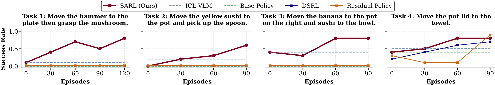
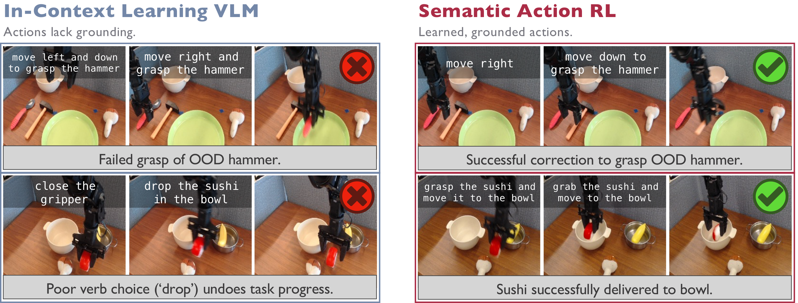

Results
SARL improves the base VLA's success rate from near 0% under the task prompt up to 60–80% after only 60–120 online episodes, in both the real world and simulation. It beats action-space RL methods (DSRL, Residual RL) that are fundamentally limited by the base policy's behavior under a single fixed prompt, and it beats an in-context-learning VLM baseline that proposes plausible commands but struggles to ground them in physical behavior.

Real-world WidowX. Across all four tasks, SARL achieves the best improvement of generalist-policy behavior in deployment. Each data point represents 10 evaluations.

Simulated LIBERO-LONG. On long-horizon LIBERO-LONG tasks, SARL outperforms DSRL, Residual RL, and the ICL VLM. It successfully adapts the policy on five tasks and matches performance on another that is already near-solved. Each point represents 64 evaluations with standard error over 3 seeds.
SARL vs. Action-Space RL: Editing prompts unlocks new behavior

SARL vs. action-space RL. On complex, long-horizon tasks the base policy fails when zero-shot prompted — its action distribution collapses into entirely incorrect modes. Action-space methods can only filter or nudge around that distribution, so they only learn when the base policy is already close to succeeding. By editing the prompt, SARL reaches regions of the VLA's behavioral prior that are inaccessible to action-only steering, sequencing skills covered under pretraining to solve the task.
SARL vs. VLM: Grounding is as important as decomposition

SARL vs. VLM prompting. An in-context-learning VLM picks commands that are semantically meaningful but lack grounding, leading to failures: it references an out-of-distribution “hammer” by name (making the VLA grab a spoon), or picks the wrong verb (drop), prematurely releasing the sushi. Through many episodes of experience, SARL learns the grounded behavior each command induces and selects the prompt that actually works.